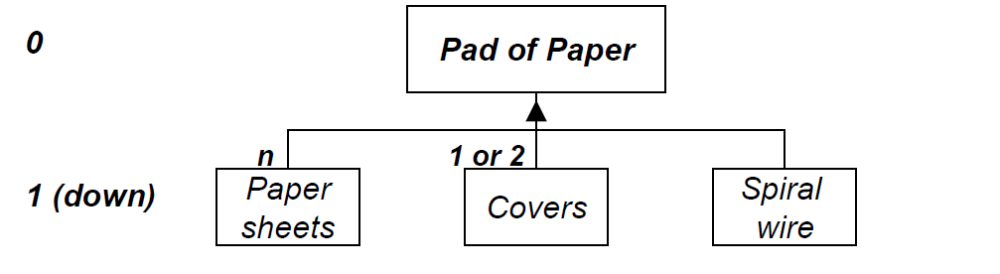
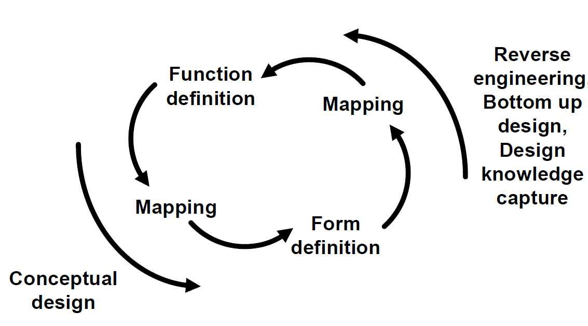
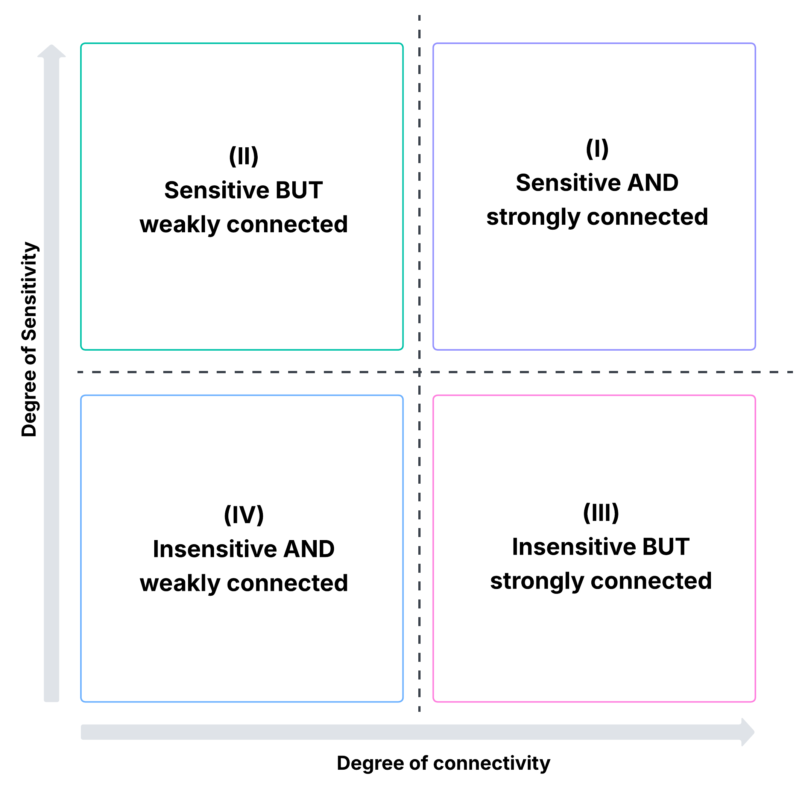

1 Architecture
The fundamental organization of a system, embodied in its components, their relationships to each other and to the environment, and the principles governing its design and evolution
-ISO / IEC / IEEE Standard 42010
A formal description of a system, or a detailed plan of the system at component level to guide its implementation
-The OPen Group Architecture Framework, TOGAF
The structure, arrangements or configuration of system elements and their internal relationships necessary to satisfy constraints and requirements
-Dan Frey
The arrangement of the functional elements into physical blocks
-Ulrich & Eppinger
An abstract description of the entities of a system and the relationship between those entities
- Edward Crawley, et al.
The embodiment of concept, and the allocation of physical/informational function to elements of form, and definition of interfaces among the elements and with the surrounding context
- Edward Crawley, et al.
1.1 Architecture as Function-Form Mapping
Despite the varying definitions of “Architectures”, they all consist of “Function”, related by “Concept”, and maps to “Form”
1.1.1 Form = Elements/Objects + Structure
| Form - Defined | Form - Described |
|---|---|
|
|
1.1.2 Decompositional View
Decompositional View uses tree structure to decompose a system into sub-systems and evetually elements (in leaf nodes). It is a useful representation to place a particular system of interests (SoI) within Use Context, which defines the architectural vision that informs: a) the core function of the SoI; b) the Boundaries separating the SoI from other supporting systems; and c) the interfaces connecting the SoI to other supporting systems. Take “a pad of paper” as an example,

1.1.3 Function = Process + Operand/Object
| Function - Defined | Function - Described |
|---|---|
|
|
1.1.4 Structural View
The structural view represents the static, enduring aspects of a system—its components, relationships, and organization—independent of how those components behave over time. There are two typical representations:
Graphical representation: Object-Process Modeling (OPM) (will expand in later chapters)
List representation: Design Structure Matrix (DSM) (will expand in later chapters)
1.1.5 Design vs. Reverse Engineering

1.2 Architect and Architecting
An architect works by applying:
Relevant modes of thought, including creative and critical thinking
The approaches of architecting, including holism, reductionism, heuristic, agile, ecosystem, etc.
Holism: emphasizes the design of systems based on the interrelationships, interactions, and emergent properties of all elements considered as a whole, rather than optimizing isolated components, with the objective of ensuring systemic coherence, resilience, and alignment with the broader environment.
Reductionism: decomposes a system into its constituent parts for analysis and optimization, based on the assumption that the behavior and performance of the whole system can be explained and engineered through the aggregation of its individual components.
Heuristic: or pattern-based approach, which applies established architectural patterns, reference models, and heuristics as reusable design abstractions, with the intent of leveraging proven structural solutions to recurrent problems while reducing design risk and accelerating development.
Agile: or incremental approach, which is an iterative and adaptive method that incrementally evolves architectural structures in synchrony with system development cycles, emphasizing responsiveness to emergent requirements, stakeholder feedback, and evolving environmental conditions.
Ecosystem: or service-dominant approach, which is to structure systems around modular services and value exchanges, prioritizing interoperability, composability, and ecosystem growth through well-defined interfaces, contracts, and governance mechanisms.
The principles, processes and tools of architecting
Principles: are the underlying and long enduring fundamentals that are always (or almost always) valid.
Methods: are the organization of approaches and tasks to achieve a concrete end, which should be solidly grounded on principles, and which are usually or often applicable.
Tools: are the contemporary ways to facilitate process, and sometimes applicable
And a lot of wisdom and experience!
1.2.1 Three Roles of the Architect
Reduce ambiguity: to incorporate strategy and technology insertion by defining the context and boundaries of the system
Employ creativity: to create the concept for the system, managing in the spectrum of solution neutral thinking
Management complexity: so that the system is comprehensible to all during its design, implementation, and evolution
2 Types of Architectures
There are many different types of architectures, depending on the context—ranging from computing and engineering to organizations, physical products and even biology. In this class, we will expand on the following types of architecture as they are more relevant within the context of EIA.
Enterprise Architecture (EA): The purpose of Enterprise Architecture is to optimize across the enterprise the often fragmented legacy of processes (both manual and automated) into an integrated environment that is responsive to change and supportive of the delivery of the business strategy.
Information Architecture (IA): is the structural design of information environments that specifies the organization, labeling, navigation, and governance of data and information resources, with the aim of enabling findability, usability, and effective decision-making across systems.
System Architecture (SyA): is the conceptual and physical arrangement of system components, their interactions, and governing principles, designed to satisfy functional requirements, quality attributes, and constraints in the realization of a complex system.
Cloud Architecture (CA): is the structural design of computing systems that leverages cloud-based services, models, and infrastructures (e.g., IaaS, PaaS, SaaS; public, private, hybrid) to achieve scalability, elasticity, resilience, and cost-efficiency in delivering IT capabilities.
Software Architecture (SwA): is the high-level design of a software system that defines its structural elements, the relationships and interactions among those elements, and the guiding principles that ensure the system meets functional requirements and quality attributes such as performance, security, and maintainability.
3 Styles of Architecture
There are in general five architectural styles: Centralized, Decentralized, Federated, Distributed, and Hybrid.
Centralized: A centralized architecture is a structural style in which control, processing, and data management are concentrated within a single primary node or core subsystem, with peripheral elements functioning mainly as clients dependent on this core for services.
Decentralized: A decentralized architecture is an architectural style in which multiple autonomous nodes perform independent control, processing, and decision-making, without reliance on a single central authority, such that each node governs its own resources and interactions, thereby promoting autonomy, robustness, and localized optimization.
Federated: A federated architecture is an architectural style in which multiple autonomous nodes or organizations interoperate through shared standards, protocols, and governance agreements, enabling collaborative data and service exchange while preserving local authority and independent control over resources.
Distributed: A distributed architecture is an architectural style in which computational and data-management tasks are partitioned across multiple interconnected nodes that coordinate through communication protocols to function as a single logical system, thereby achieving scalability, resilience, and transparency of distribution.
Hybrid: A hybrid architecture is a composite structural style that integrates elements of centralized, decentralized, and distributed models, typically centralizing critical components while allowing distributed or decentralized autonomy in selected functions, to balance control, scalability, and resilience under contextual constraints.
| Aspect | Centralized | Decentralized | Distributed | Federated | Hybrid |
|---|---|---|---|---|---|
| Control | Central hub authority. | Fully local authority per node. | Shared control under system-wide governance. | Local authority + shared agreements. | Mixed (central for some functions, local for others). |
| Coordination | Top-down, fully centralized. | None or ad hoc between nodes. | Protocol-driven, inherent in design. | Standards-driven, negotiated agreements. | Context-dependent; combines multiple coordination modes. |
| System Behavior | Appears as one system, controlled centrally. | Each node behaves independently. | Appears as one logical system to users, coordinated internally. | Appears as many systems cooperating, each autonomous but interoperable. | Varies by design — some centralized, some federated, some distributed. |
| Homogeneity | Homogeneous by design. | Heterogeneous — each node can differ. | Typically homogeneous (nodes use same software/protocols). | Heterogeneous — nodes may use different tech stacks. | Mixed — some subsystems homogeneous, others heterogeneous. |
| Interoperability | Not needed (everything is inside one system). | Not guaranteed; integration is ad hoc. | Built-in by design. | Achieved through agreed standards (e.g., FHIR, SAML, OAuth). | Selective; interoperability mechanisms applied where needed. |
| Failure Impact | Failure of the hub can bring down the whole system. | Failure isolated to one node, others unaffected. | Node failures can impact system but mitigated by redundancy. | Failure isolated to one member; federation continues. | Depends on which part fails; mitigated by redundancy in design. |
| Strengths | Simplicity, consistency, easy governance. | Robust autonomy, local optimization, resilience to central failure. | Scalability, performance, transparency to users. | Autonomy + interoperability, scales across organizations. | Balances tradeoffs; adaptable to diverse requirements. |
| Weaknesses | Single point of failure, poor scalability. | Fragmentation, duplication, lack of global view. | Synchronization complexity, latency, consistency tradeoffs. | Governance complexity, requires trust and alignment. | Added complexity, governance challenges, risk of unclear |
4 Architectural Decisions
Architectural decisions are the subset of design decisions that are most impactful:
- they relate to form-function mapping,
- they determine the performance envelope,
- they encode the key trade-offs
- then often strongly determine cost
Architectural decisions lead to architectures that are fundamentally different from each other
Architecture can be an explicit choice
Architectural decisions can be identified and sequenced
The system architect must help make the complex system less complicated
4.1 Programmed vs. Non-programmed decisions
Programmed decisions: routine, structured, and repetitive decisions made by applying established rules, procedures, or standard operating policies
Non-programmed decisions: unique, unstructured, and non-routine decisions that require judgment, creativity, or problem-solving because no pre-established procedures exist.
4.2 4-Quadrant Decision Matrix
Sensitivity: does this decision strongly influence metrics (?
Connectivity: would substantial rework be required to change this decision? Could we make this decision downstream without regards for other decisions?

4.3 Six Patterns of Architectural Decisions
| Pattern | Description |
|---|---|
| DECISION-OPTION | A group of decisions where each decision has its own discrete set of options. |
| DOWN-SELECTING | A group of binary decisions representing a subset from a set of candidate entities. |
| ASSIGNING | Given two different sets of entities, a group of decisions assigning each element from one set to any subset of entities from the other set. |
| PARTITIONING | A group of decisions representing a partitioning of a set of entities into subsets that are mutually exclusive and exhaustive. |
| PERMUTING | A group of decisions representing a one-to-one mapping between a set of entities and a set of positions. |
| CONNECTING | Given a set of entities that are nodes in a graph, a group of decisions representing the connections between those nodes. |